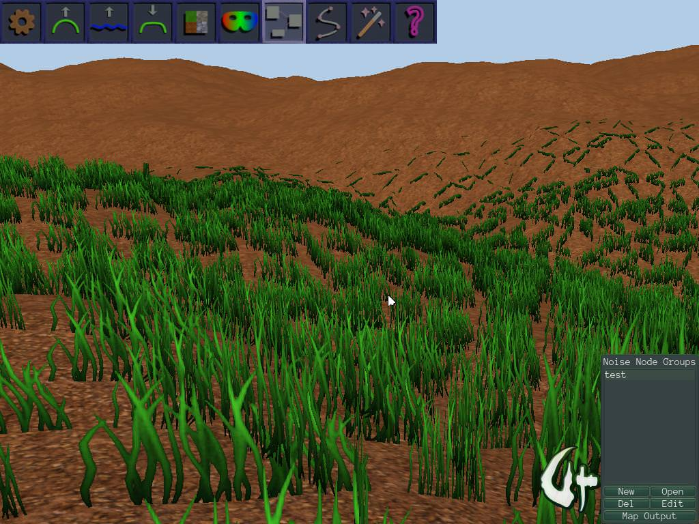

I am in the process of developing a grass/ground vegetation mapping scheme as outlined here , using a static mesh with billboard structures that follows the player around. The mesh draws vegetation info from a texture overlaid on the terrain, which describes how to draw/place it. The technique phases in the vegetation at a certain radius, by increasing a scale factor from 0 to keep things from visibly popping into place.
So far, I have been able to implement it fairly well in Urho3D.

(I’m using a very quickly made experimental mesh, so it doesn’t look the greatest yet; just trying to figure the technique out before I spend a bunch of time refining it.)I do have a couple issues, though, that I’m unable to sort out:
-
Because the mesh is being deformed in the vertex shader using a vertex texture fetch from the heightmap, the actual geometry is clipped from view if, for example, the player is on a high hill, since the ‘real’ bounding box of the grass structure still sits at Y=0 and is not very tall. I can hack my way around this by adding a small bit of degenerate geometry to the grass mesh, placing it at some arbitrary high point (Y=300 works well) above the rest of the mesh to artificially inflate the height of the mesh bounding box, but I was wondering if there was a less hackish way of ensuring the grass mesh is drawn even if the ‘real’ bounding box is out of frustum. Is there some way to mark a model as “do not cull for any reason” or something like that? I don’t like having to blow up the size of the bounding box, since that can play hell with shadow mapping when looking out horizontally on the terrain.
-
I created a GrassShadow.glsl shader to implement a VS for the shadow pass, that implements the same texture fetch and translation as the main shader, but it doesn’t seem to work. If I use the default Shadow.glsl I get shadows as if the grass were always at the Y=0 plane, but the shadows do not ‘follow’ the grass as it translates upward due to the heightmap. However, if I use a modification of Shadow.glsl that includes the texture fetch and translation, I get no shadows at all, even at Y=0, which makes me wonder if the Shadow shader isn’t getting all of the uniforms I’m sending the main shader.
Can anybody confirm whether or not the shadow pass gets the same set of uniforms as the main shader? I am setting the HeightData uniform, the HeightMap texture and the CoverMap texture manually through code after the material is loaded.
The main shader can be seen at https://pastebin.com/NdRufTKZ while the shadow shader can be seen at https://pastebin.com/DLKV4ThW
I am passing 2 textures (the heightmap and the foliage coverage map) as well as a vec4 uniform that contains the heightmap dimensions and the terrain sampling sizes (x/z sample spacing and height) that are passed to Terrain::SetSpacing. The shader uses the sampling parameters and size to calculate texture coordinates, then indexes the heightmap texture to calculate a vertical translation that is applied to the vertex. The coverage map currently encodes X and Z offsets in the R and B channels, to translate the billboard geometry by a small amount to help alleviate the rigid grid-like structure.
Edit: I have uploaded a repo demonstrating the issue: https://github.com/JTippetts/Urho3DGrassTest